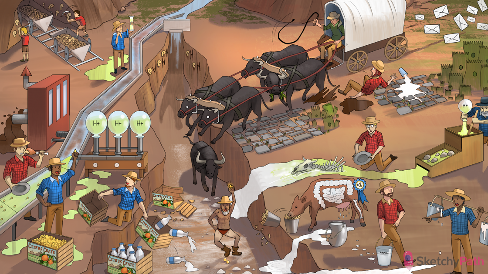

Dried up river deposits: all renal stones form due to supersaturation (adequate hydration is cornerstone of treatment)
Milk dripping into river bed: high concentration of calcium in the renal tubule → calcium stones (calcium oxalate most common)
Ox in river bed: too much oxalate in the renal tubule → calcium oxalate stones
Milk dripping from udders: hypercalciuria (e.g. idiopathic, or due to hypercalcemia, chronic acidosis) can cause calcium stones
Normal milk bucket: hypercalciuria with normocalcemia → calcium stones
First place dairy cow: hypercalciuria with normocalcemia is the most common metabolic abnormality causing calcium stones
GI cow spot: absorptive hypercalciuria (excessive gut absorption of calcium) is the most common cause of hypercalciuria with normocalcemia
Leaking kidney milk bucket: renal hypercalciuria (defect in proximal reabsorption of calcium) can cause hypercalciuria with normocalcemia
Bone cow spot: resorptive hypercalciuria (excess resorption of calcium from the bone) can cause hypercalciuria with normocalcemia
Elevated milk buckets: hypercalcemia (e.g. due to PHPT, cancer) can cause hypercalciuria and calcium stones
Acid on bones: acidosis can cause hypercalciuria and calcium stones (calcium-phosphate buffer system)
Citrus crate with milk: citrate binds calcium in the renal tubules (soluble complex prevents stone formation
Acid miners: acidosis can cause calcium stones (due to hypocitraturia)
Acid miner grabbing citrus crate: acidemia promotes resorption of citrate from tubule → less citrate bound to calcium in tubule → calcium stones
Spewing mud: diarrhea can cause calcium stones (due to volume depletion, and acidemia with hypocitraturia)
Meat eater: high protein diets can cause calcium stones (acidemia causes hypocitraturia)
Crushed citrus crate: vitamin C deficiency can cause calcium stones (due to hypocirtaturia)
Cow eating salty peanuts: increased dietary sodium intake can cause calcium stones (reduced Na+ and Ca2+ reabsorption in the nephron through their symporter)
Spilling milk: decreased dietary calcium promotes calcium oxalate stone formation (due to increased GI absorption of unbound oxalate)
Oxen stampede: increased oxalate GI absorption (e.g. due to decreased dietary Ca2+, vegan diet, malabsorption) promotes calcium oxalate stone formation
Ox eating plants: pure vegan diets (without calcium supplementation) can cause calcium oxalate stones
Milk collecting in damaged GI path: fat malabsorption (e.g. Crohn's, short gut) binds calcium in the gut → GI absorption of unbound oxalate → calcium oxalate stones
Fossil mining kids: calcium phosphate stones are the most common stone found in children
Acid cylinder: type 1 renal tubular acidosis (RTA) promotes calcium phosphate stone formation (acidemia, plus alkaline urine environment)
Elevated “pH” shape: alkaline urine environment promotes calcium pHosphate stone formation
Envelopes from ox cart: calcium oxalate crystals have an “envelope” shape on microscopy
Wedge shaped fossil mine car: calcium phosphate crystals have an “elongated wedge” shape on microscopy
Pale thighs: hydrochlorothiazide can help prevent calcium stone formation by increasing reabsorption of calcium in the distal tubule